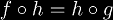
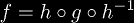
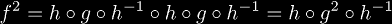
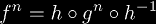

Two functions f and g are topological conjugates if a homeomorphism h exists between them such that . This allows us to relate the iterates of f and g together. Since h is a homeomorphism, it is an invertible function, so we can write f in terms of the others as . The second iterate of f would then be , so generalizing this result we get .
This may be said more simply by saying the following diagram commutes:
The reason why there is only two sets instead of four is that f and g are required to be endofunctions in order to iterate them. The fortunate consequence of this is that you can "stack" these diagrams together in almost any way you want. Thus, from the previous diagram we can form the diagram:
which also must commute. These kinds of operations can form new equations at every step of the way. Using these diagrams, you can encode dozens of equations in a single expression. This provides an incredible economy of space and economy of thought. It makes dealing with multiple equations much simpler.
|
Copyright © 2010 Andrew Robbins ( |
|